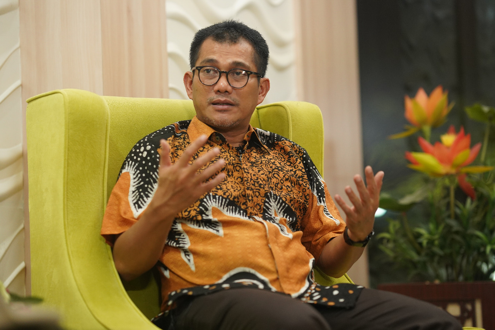

Mitigasi dan Persiapan Penyelenggaraan Ibadah Umrah 1442H
Jakarta (PHU) – Kementerian Agama melalui Ditjen Penyelenggaraan Haji dan Umrah (PHU) bersama para pimpinan Asosiasi Penyelenggara Perjalanan Ibadah Umrah (PPIU)/Penyelenggara Ibadah Haji Khusus (PIHK) dan 2 maskapai penerbangan yaitu Garuda Indonesia dan Saudia Airlines telah melakukan pembahasan mitigasi permasalah dan persiapan penyelenggaraan ibadah umrah 1442H, jika pemerintah Arab Saudi kembali membuka dan menerima jemaah umrah mendatang.
Hal tersebut disampaikan langsung oleh Direktur Bina Umrah dan Haji Khusus M. Arfi Hatim saat Diskusi Persiapan Penyelenggaraan Ibadah Umrah Tahun 1442H melalui rapat daring, hari Rabu pagi (22/07).
“Karena sampai saat ini masih belum ada informasi resmi dari Pemerintah Kerajaan Arab Saudi tentang penyelenggaraan ibadah umrah 1442H, maka dengan ini akan kami siapkan mitigasi potensi permasalahan dan persiapan penyelenggaraan umrah,” kata Arfi.
Kemenag dan pimpinan Asosiasi PPIU/PIHK kata Arfi, telah bersepakat akan memprioritaskan keberangkatan jemaah umrah yang tertunda akibat larangan berkunjung untuk umrah dan ziarah per 27 Februari 2020, jika Pemerintah Arab Saudi kembali membuka penyelenggaraan ibadah umrah.
Dukungan untuk memprioritaskan jemaah yang tertunda tersebut secara tegas diungkapkan oleh Waketum Kesthuri, Arta Hanif dan diamini oleh seluruh asosiasi PPIU/PIHK.
Arfi juga menjelaskan bahwa hasil rapat tersebut sangat memahami adanya kemungkinan penambahan biaya perjalanan ibadah umrah bagi jemaah yang tertunda keberangkatannya, karena adanya kenaikan pajak di Arab Saudi, termasuk kebijakan protokol kesehatan yang akan diberlakukan oleh Pemerintah Indonesia dan Pemerintah Arab Saudi.
Ia juga meminta kepada PPIU yang sedang mempersiapkan keberangkatan jemaah umrah untuk melakukan penjadwalan keberangkatan, dengan tidak mencantumkan tanggal keberangkatan dan harga paket layanan, mengingat masih belum jelasnya kapan jemaah umrah dapat diberangkatkan.
“Hasil pemantauan di lapangan, saat ini beberapa PPIU yang sudah menawarkan tanggal keberangkatan dan mencantumkan harga paket umrah, padahal kita masih belum mendapatkan kejelasan informasi kapan Saudi membuka penyelenggaraan ibadah umrahnya,” tuturnya.
Senada hal itu, salah satu pimpinan Asosiasi PPIU/PIHK, Ketua Amphuri Joko Asmoro menyatakan mendukung kebijakan Kemenag yang mengimbau kepada seluruh PPIU untuk mempersiapkan penyelenggaraan ibadah umrah, dengan tidak mencantumkan tanggal keberangkatan dan harga paket layanan umrahnya terlebih dahulu sebelum ada kejelasan informasi dari Pemerintah Arab Saudi.
“Apapun kebijakan Kemenag terkait penyelenggaraan ibadah umrah 1442H, akan kami sosialisasikan kepada PPIU yang tergabung dalam anggota kami,” tutur Joko.
Sedangkan untuk status tiket jemaah umrah yang tertunda keberangkatannya, dalam rapat tersebut juga telah diminta kepada kedua maskapai penerbangan, yaitu Garuda dan Saudia untuk tidak mempersulit proses refund maupun reschedule tiket penerbangan jemaah umrah.
Terkait dengan rencana jadwal penerbangan umrah, kedua maskapai tersebut menyatakan bahwa kepastian jadwal penerbangan masih menunggu kebijakan dari pemerintah Arab Saudi.
“Kami hanya mempersiapkan estimasi keberangkatan, namun kepastian penerbangan masih menunggu kebijakan pemerintah Arab Saudi," ujar Andi Bermawi, GSA Saudia Airlines di Jakarta.
Hal serupa juga disampaikan oleh Ubay Ihsandi, VP Umrah and Hajj Garuda Indonesia.
Terkait dengan penyelenggaraan ibadah umrah dengan memperhatikan prosedur dan protokol kesehatan Covid-19, Kemenag akan berkoordinasi dengan Satgas COVID-19 nasional sebagai langkah antisipatif penularan Covid-19.
Diskusi daring tersebut diikuti oleh pejabat dari Ditjen PHU, Konsul Haji KJRI Jeddah, para pimpinan Amphuri, Kesthuri, Himpuh, Sapuhi, pimpinan Garuda Indonesia, dan Saudia Airlines.
Sumber : Situs Resmi Kemenag RI